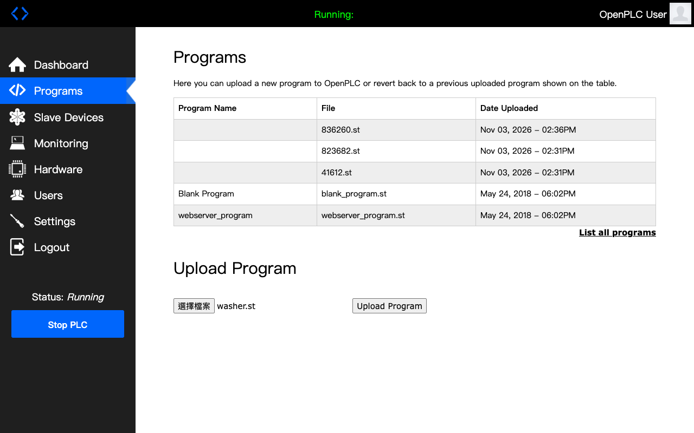
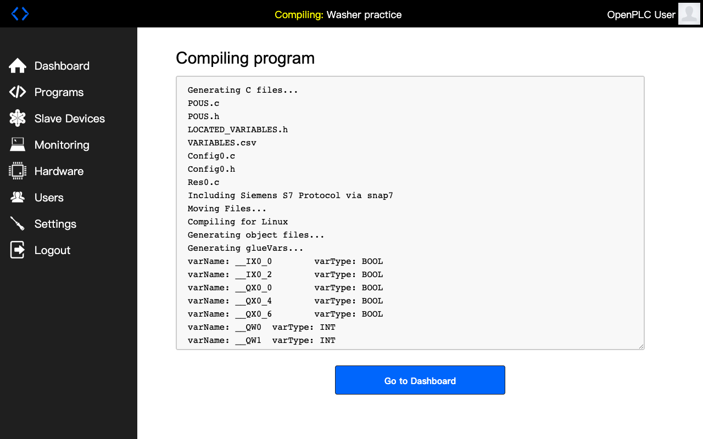
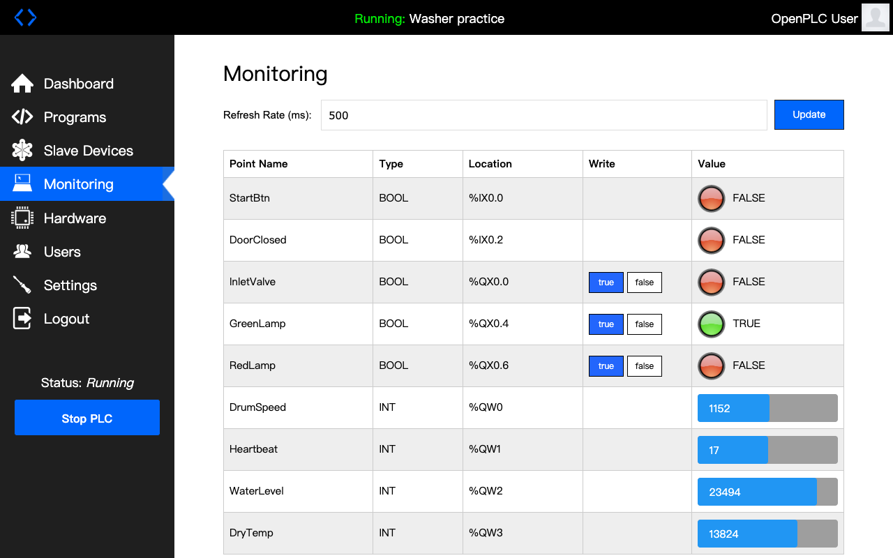
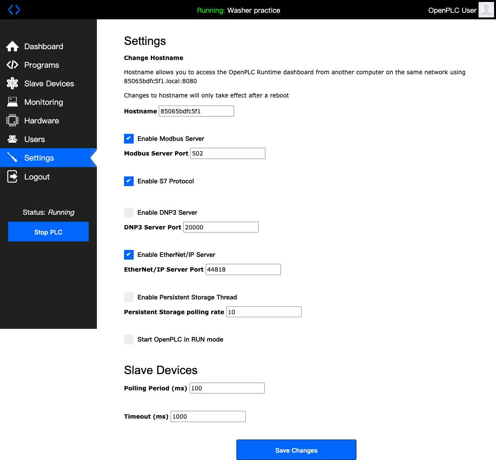

照著點位表一直改、一直測，卻怎麼都找不到那一格。這一頁說明為什麼會這樣、問題可能出在哪個設定畫面，以及 C# 工程師第一次接 PLC 時，該照什麼順序做。
基礎觀念（置物櫃、四種訊號、櫃號、口訣）請先看 SCADA 入門圖解。本頁的設定畫面都是示意圖，各品牌軟體長得不一樣，但要設定的東西是同一套。
最常見的是 PLC 程式改過了，點位表卻沒跟著更新。你照著舊文件找，當然找不到。還有一個常見的方向錯誤：一直在找「13824 這個數字」。這個數字會隨現場一直變，量程設定不同也不會是 13824，別的格子還可能剛好出現一樣的數字。
正確做法是：不找數字，找會跟著現場一起動的格子。做法在第 3 節。
| 原因 | 你會看到 | 誰要改 |
|---|---|---|
| 點位表沒更新（PLC 改了，文件沒改） | 格子和現場對不上 | PLC 工程師更新點位表 |
| 位址差一格（文件從 1 數，還是從 0 數沒寫清楚） | 讀到隔壁格的值 | 你：位址加減 1 試試 |
| 站號不對 | 全部讀不到，等很久才報錯 | 問 PLC 工程師站號 |
| 櫃子種類用錯（3 號櫃的東西，用讀 4 號櫃的方法） | PLC 回「這格不存在」，或讀到別的數字 | 你：換讀取方法 |
| 模組量程設錯（感測器是 4～20 mA，模組設成 0～10 V） | 數字範圍怪，永遠到不了滿格 | PLC 工程師改模組設定 |
| 電線接到別的接點 | 動 A，結果是 B 那格在變 | 現場改線，或改點位表 |
| 一個數字佔兩格（小數、32 位元） | 兩格一起變，數字很大很怪 | 你：兩格合起來讀 |
| 換算範圍錯（以為最高 50 cm，其實是 100 cm） | 格子對、會動，但換算差一倍 | 對感測器規格書 |
從電線到你的 C#，中間有四個地方要設定或記錄。前兩個在 PLC 工程師的電腦裡，第三個是文件，第四個是你自己驗證用的工具。任何一個沒對上，你就會找不到。
| AI 模組（第 3 槽） | 接什麼 | 量程 |
|---|---|---|
| 通道 0 | 水位計 | 4–20 mA |
| 通道 1 | 水溫計 | 4–20 mA |
| 通道 2 | 烘衣溫度計 | 0–10 V |
| 程式裡的名字 | 接在哪裡 | Modbus 櫃號 |
|---|---|---|
| StartBtn | DI 模組・接點 1 | 10001 |
| DoorClosed | DI 模組・接點 3 | 10003 |
| WaterLevel | AI 模組・通道 0 | 30003 |
| DrumSpeed | AO 模組・通道 0 | 40001 |
| Heartbeat | PLC 內部（不接線） | 40002 |
注意：畫面 B 是簡化的示意。真實世界裡，「哪一格」不一定是一張表，各品牌做法不同，見下面「真的軟體長怎樣？」。
| 櫃號 | 名稱 | 類型 | 範圍 | 單位 |
|---|---|---|---|---|
| 10001 | 開始鍵 | DI | 0／1 | — |
| 10003 | 門關好 | DI | 0／1 | — |
| 30001 | 水位 | AI | 0～27648 → 0～50 | cm |
| 40001 | 滾筒轉速設定 | AO | 0～27648 → 0～1200 | rpm |
| 40002 | 心跳計數器 | 內部 | 每秒 +1 | — |
現場一邊加水，30001 一直是 0，30003 卻跟著上升。這就證明點位表過期了，水位其實在 30003。
工具讀得到，代表 PLC、網路、點位都沒問題。問題只在你的程式「問的方式」跟工具不一樣。所以解法很單純：工具上每一個欄位，在 C# 裡都有一個對應的位置，一格一格對過去，哪裡不一樣就是哪裡錯。
| 工具上的欄位（畫面 D） | C# 放在哪裡 | 抄錯了會看到 |
|---|---|---|
| IP 位址 192.168.0.10 | new TcpClient(ip, port) | 2 秒連不上 |
| Port 502 | new TcpClient(ip, port) | 連線被拒絕 |
| 站號 1 | 括號第 1 個 | 連得上，但等 2 秒沒回答 |
| 要讀的櫃子 3xxxx | 方法名稱 ReadInputRegisters | 不報錯，但讀到別櫃的數字 |
| 起始位址 0 | 括號第 2 個 | 讀到隔壁格，或例外碼 2 |
| 讀幾格 10 | 括號第 3 個 | 超過 PLC 有的格子，例外碼 2 |
| 顯示格式（有正負號、小數） | 你自己的換算 | 65535、16842 這類怪數字 |
最上面 6 行就是工具的 6 個欄位，照抄就好。它會把讀到的每一格印出來，出錯時也會告訴你是哪一種錯。專案要先裝 NModbus：dotnet add package NModbus。
string ip = "192.168.0.10";工具的 IP 位址。int port = 502;工具的 Port。Modbus TCP 幾乎都是 502。byte unitId = 1;工具的站號。int kind = 3;工具選的櫃子：0、1、3 或 4。ushort start = 0;工具的起始位址。工具若是從 0 數就照抄；30001 → 0。ushort count = 3;讀幾格。using var tcp = new TcpClient();準備一條網路連線，程式結束自動關掉。try試著連線，出錯跳到 catch。{ if (!tcp.ConnectAsync(ip, port).Wait(2000))開始連線，最多等 2000 毫秒（2 秒）。等不到就是「沒連上」。 { Console.WriteLine("✗ 2 秒連不上：IP 不對或網路不通");IP 抄錯、網路線沒接、PLC 沒開，都是這個。 return;直接結束程式，後面不用做了。 }}catch (AggregateException)對方馬上回「不接」。{ Console.WriteLine("✗ 連線被拒絕：Port 不對，或 PLC 不接受更多連線");Port 抄錯；或是 PLC 同時只接受少數連線，測試工具還連著。 return;}var plc = new ModbusFactory().CreateMaster(tcp);建立主站，之後用 plc 讀寫。plc.Transport.ReadTimeout = 2000;問了 2 秒沒回答就算失敗。plc.Transport.Retries = 0;失敗不要自己重試，馬上告訴我們。try{ if (kind == 0 || kind == 1)如果是 0 或 1 號櫃（開關）…… { bool[] bits = kind == 0讀回來是一排 true／false。 ? plc.ReadCoils(unitId, start, count)0 號櫃用 ReadCoils， : plc.ReadInputs(unitId, start, count);1 號櫃用 ReadInputs。 for (int i = 0; i < bits.Length; i++)一格一格印。 Console.WriteLine($"{kind * 10000 + start + i + 1:00000} {bits[i]}");把位址換回櫃號再印，例如「10001 True」，方便跟工具對照。 } else否則就是 3 或 4 號櫃（數字）…… { ushort[] regs = kind == 3讀回來是一排 0～65535 的數字。 ? plc.ReadInputRegisters(unitId, start, count)3 號櫃用 ReadInputRegisters， : plc.ReadHoldingRegisters(unitId, start, count);4 號櫃用 ReadHoldingRegisters。 for (int i = 0; i < regs.Length; i++)一格一格印。 Console.WriteLine($"{kind * 10000 + start + i + 1} 原始 {regs[i],5} 有正負號 {(short)regs[i],6}");同一個數字印兩種看法：原始的，和「有正負號」的。工具顯示 −1、C# 顯示 65535 時，一眼就看得出來。 }}catch (SlaveException ex)PLC 有回答，但說「不行」。{ Console.WriteLine($"✗ PLC 回答「不行」，例外碼 {ex.SlaveExceptionCode}");印出例外碼。 Console.WriteLine(" 碼 2：這一格不存在 → 對照工具的櫃子種類和起始位址");最常見。位址填成 30001、或讀太多格。 Console.WriteLine(" 碼 1：不支援這個動作 → 櫃子種類選錯，或這一櫃不能寫");例如想寫 3 號櫃。}catch (Exception ex)其他錯誤：連得上，卻等不到回答。{ Console.WriteLine($"✗ PLC 沒回答：{ex.GetType().Name}");印出錯誤種類（通常是 IOException）。 Console.WriteLine(" 連得上卻沒回答 → 站號跟工具不一樣");PLC 只回答叫到自己站號的問題，站號錯了它就不理你。}照工具抄對時，印出來會長這樣，跟畫面 D 的工具一格一格對得上：
30001 原始 0 有正負號 0 30002 原始 8294 有正負號 8294 30003 原始 13824 有正負號 13824
本節所有輸出都是實際執行的結果：我在這台 Mac 上用 C# 寫了一台假 PLC（放洗衣機的點位），再把下面每一種錯誤故意做一次。測試時 IP 用 127.0.0.1、Port 用 5020，其他照上面。
工具：起始位址 0，讀得到。C#：
// 錯：把 30001 整個填進去 plc.ReadInputRegisters(1, 30001, 1); // ✗ PLC 回答「不行」，例外碼 2 // 對：櫃子由方法決定，括號只填第幾格（從 0 數） plc.ReadInputRegisters(1, 0, 1);
工具：30001 是 0。C# 卻讀到 8294，那其實是隔壁 30002 水溫。
// 錯：30001 填成 1（忘了從 0 數） plc.ReadInputRegisters(1, 1, 1); // 8294＝30002 // 對 plc.ReadInputRegisters(1, 0, 1); // 0＝30001
有些工具是從 1 數。先看工具的欄位旁邊寫「從 0」還是「從 1」，再決定要不要減 1。
工具選 3xxxx，讀到 0、8294、13824。C# 用了 4 號櫃的方法：
// 錯：3 號櫃的東西，用讀 4 號櫃的方法 plc.ReadHoldingRegisters(1, 0, 3); // 40001 1152 ← 這是轉速，不是水位 // 40002 17 ← 這是心跳 // 對 plc.ReadInputRegisters(1, 0, 3);
開關也一樣：開始鍵 10001 用 ReadInputs 讀到 True；誤用 ReadCoils 讀到的是 00001 進水閥的 False。程式不會報錯，只會讀到「另一個東西」。
工具：站號 1。C# 寫成 0 或 2：
plc.ReadInputRegisters(0, 0, 1); // （等 2 秒）✗ PLC 沒回答：IOException // 對：跟工具一樣 plc.ReadInputRegisters(1, 0, 1);
網路是通的，但 PLC 只回答叫到自己的問題。連得上卻等很久，第一個就查站號。
// IP 錯 ✗ 2 秒連不上：IP 不對或網路不通 // Port 錯 ✗ 連線被拒絕：Port 不對，或 PLC 不接受更多連線
IP、Port 都對還是被拒絕：有些 PLC 同時只接受很少的連線。先把測試工具斷線，再跑 C#。
工具讀到 13824，C# 也讀到 13824，換算後卻是 0：
// 錯：整數 ÷ 整數，小數被丟掉 double cm = raw / 27648 * 50; // 0 // 對：寫 27648.0 double cm = raw / 27648.0 * 50; // 25
工具的顯示格式設成「有正負號（Signed）」，C# 的 ushort 沒有負數：
ushort raw = plc.ReadHoldingRegisters(1, 4, 1)[0]; // raw = 65535 // 對：當成有正負號的數字看 short value = (short)raw; // -1
溫度可能是負的、或「差值」這類數字，都要問 PLC 工程師：這一格有沒有正負號？
工具的格式設成「小數（Float）」，一個小數佔 2 格：
ushort[] r = plc.ReadHoldingRegisters(1, 5, 2); // r[0] = 16842，r[1] = 26214（分開看沒意義） // 對：兩格合起來，前一格在前 uint both = ((uint)r[0] << 16) | r[1]; float value = BitConverter.Int32BitsToSingle((int)both); // 25.3
如果算出來是 2.7E+23 這種天文數字，就是兩格順序反了：把 r[0] 和 r[1] 對調。
<< 16＝往前推 16 位，讓前一格變成「高位」；|＝把兩半拼起來
| C# 看到 | 先對照工具的 |
|---|---|
| 2 秒連不上 | IP |
| 連線被拒絕 | Port；工具是不是還連著 |
| 連得上，等 2 秒沒回答 | 站號 |
| 例外碼 2 | 起始位址（有沒有填成櫃號）、讀幾格 |
| 沒報錯，數字跟工具不一樣 | 櫃子種類（方法名稱）、位址差一格 |
| 數字一樣，但顯示怪 | 工具的顯示格式：有正負號？小數？ |
| 換算後是 0 | 你的公式：27648 要寫 27648.0 |
完整程式碼（含練習用的假 PLC）放在網站的 code/plc-check 和 code/fake-plc 資料夾。
台灣工廠常見的 PLC 有三菱、西門子、台達、歐姆龍、永宏等，每家的設定軟體都不一樣。畫面 A 各家都很像：先畫出一排模組，點選 AI 模組，在屬性裡選量程。畫面 B 差很多：
| PLC | 畫面 A：硬體組態 | 畫面 B：「哪一格」怎麼決定 |
|---|---|---|
| 西門子 S7-1200／1500 軟體：TIA Portal | 「裝置組態」：點選模組 → 屬性 → 量測類型、量程 | 沒有對照表。PLC 工程師在程式裡放一個 MB_SERVER 功能塊，指定一塊資料區（DB）當 4 號櫃；資料區裡第 1 個數字就是 40001，依序排下去。開關類則自動對應 PLC 的輸入輸出區 |
| 三菱 FX5U 軟體：GX Works3 | 「模組構成圖」：點選模組 → 參數 | 在 CPU 的乙太網路參數裡開 Modbus/TCP，可以設定哪些格子對應到 PLC 內部哪些位置，比較接近畫面 B 的表格 |
| 台達 DVP 軟體：ISPSoft 等 | 模組設定畫面 | 原廠固定好，寫在該型號手冊的「Modbus 位址表」，不能改。你直接查手冊 |
| OpenPLC（免費，第 4 階段會用） | 專案裡的硬體設定 | 依變數類型固定排好，例如 %IW 開頭放 3 號櫃、%QW 開頭放 4 號櫃。官方文件有對照表 |
所以「誰決定放哪一格」要分品牌看：西門子是 PLC 工程師在程式裡決定，三菱是在參數裡設定，台達是原廠固定。不管哪一家，C# 工程師都是拿點位表或手冊來核對，再用「找會動的格子」確認。
OpenPLC 是免費、開源的 PLC，可以在電腦上跑。我把洗衣機練習程式（washer.st）放進去，從上傳、編譯、啟動到 C# 讀數字，每一步都是真的畫面。因為沒有接真的感測器，水位用程式模擬，放在 40003。



| 監看畫面的名字 | Location | Modbus 櫃號 | C# 怎麼讀 |
|---|---|---|---|
| StartBtn | %IX0.0 | 10001 | ReadInputs(1, 0, 1) |
| InletValve | %QX0.0 | 00001 | ReadCoils(1, 0, 1) |
| GreenLamp | %QX0.4 | 00005 | ReadCoils(1, 4, 1) |
| DrumSpeed | %QW0 | 40001 | ReadHoldingRegisters(1, 0, 1) |
| Heartbeat | %QW1 | 40002 | ReadHoldingRegisters(1, 1, 1) |
| WaterLevel | %QW2 | 40003 | ReadHoldingRegisters(1, 2, 1) |
規則：%IX 開關進來 → 1 號櫃；%QX 開關出去 → 0 號櫃；%IW 數字進來 → 3 號櫃；%QW 數字出去 → 4 號櫃。後面的數字就是第幾格（從 0 數）。開關類的 %QX0.4 是「第 0 組的第 4 個」，換成格子是 0×8＋4＝4。

程式在 code/csharp-test/Program.cs，就是本頁第 3、6 節的寫法，用 dotnet run 執行：
== 1. 先對心跳（40002）== 心跳 111 心跳 112 心跳 113 == 2. 掃描 40001～40010，找會動的格子 == 40002 變了：114 → 115 40003 變了：12438 → 13820 40002 變了：115 → 116 40003 變了：13820 → 15202 == 3. 換算水位（40003）== 原始數字 17966 → 水位 32.5 cm == 4. 讀開關 00001～00008 == 00001 進水閥 False，00005 綠燈 True，00007 紅燈 False == 5. 讀 30001（沒接線）== 30001 = 0
掃描程式自己找出「會動的是 40002 和 40003」，跟監看畫面完全對得上。30001 是 0，因為這台 OpenPLC 沒有接感測器，這也是第 8 節「一直是 0」的真實例子。
真實工作也是這樣：工具都有自己的規矩，手冊沒寫的，就要看錯誤訊息一步一步試。
# 1. 依 OpenPLC 官方說明安裝並啟動，瀏覽器打開（帳號密碼預設 openplc） open http://localhost:8080 # 2. 在 Programs 上傳 code/washer.st，編譯完成後按 Start PLC # 3. 執行 C#（需要 .NET 8） cd code/csharp-test dotnet run
兩個人配合：一個人在現場改變一個訊號（按住開始鍵、加一點水），你在電腦前看哪一格跟著變。變的那一格，就是它真正的位置。這在工廠叫「點對點測試」。
人眼盯著十幾格很累，交給 C# 掃描：每秒讀一排，哪一格變了就印出來。
ushort[] last = null;上一次讀到的那一排數字。一開始還沒讀過，先放空的。while (true)一直重複做下面的事，直到你按 Ctrl+C 停止。{ ushort[] now = plc.ReadInputRegisters(1, 0, 20);從第 0 格開始，連讀 20 格，也就是 30001～30020。 if (last != null)如果有上一次的資料（第二輪以後），才拿來比。 for (int i = 0; i < now.Length; i++)一格一格看，i 從 0 數到 19。 if (now[i] != last[i])這一格跟上一次不一樣嗎？ Console.WriteLine($"{30001 + i} 變了：{last[i]} → {now[i]}");印出「30003 變了：4120 → 13824」。 last = now;這一輪讀到的，變成下一輪的「上一次」。 Thread.Sleep(1000);休息 1 秒（1000 毫秒）再讀。}要找開關（DI），把讀取那行換成 bool[] now = plc.ReadInputs(1, 0, 20);，其他一樣，請現場按一下按鈕。
心跳計數器（40002）每秒自己加 1，不用請任何人去現場按東西，是最好的第一個測試。它一次幫你確認三件事：
| 你讀 40002（程式填 1）看到 | 代表 |
|---|---|
| 1527、1528、1529…每秒加 1 | ✓ 網路通、站號對、位址算法對，可以開始對其他訊號 |
| 數字不動，但讀 40001（填 0）那格在跳 | 文件和程式差了一格。之後每一格都要照這個差距調整 |
| 讀得到，但數字永遠不變 | PLC 可能在 STOP（停止）模式，程式沒在跑 |
| 等很久才報錯 | IP、Port 或站號不對，回第 5 節第 2 步 |
跟 PLC 工程師要：點位表（含版本日期）、PLC 的 IP、Port（Modbus TCP 通常是 502）、站號、每一格的型別和範圍。
手上有點位表，而且確認是最新版。終端機打 ping 192.168.0.10，再打 nc -vz 192.168.0.10 502。
照畫面 D 填好 IP、站號，讀 4 號櫃、位址 1（就是 40002）。
數字每秒加 1。拿著點位表，請現場一個一個動，看是不是點位表寫的那一格在變。不一樣的地方記下來。
每一格都打勾，或記下差異。只讀心跳一格，印出來。見第 6 節。
C# 印出的心跳，和工具看到的一樣。把點位表寫成 JSON 檔，程式照檔案讀。PLC 改了，只改檔案，不用改程式。見第 7 節。
改 JSON 裡的櫃號，不用重新編譯就讀到新位置。第 4 步記下的不一致，整理給 PLC 工程師，請他更新點位表版本。範本在第 9 節。
拿到新版點位表。先在專案裡裝 NModbus 套件：dotnet add package NModbus。下面每一行右邊都有白話說明。
using System.Net.Sockets;要用「網路連線」的工具。using NModbus;要用 NModbus 這個套件（它懂 Modbus 怎麼講話）。using var tcp = new TcpClient("192.168.0.10", 502);連到 PLC 的 IP 和 502 號門。var plc = new ModbusFactory().CreateMaster(tcp);建立一個「主站」，之後都用 plc 這個名字來讀寫。plc.Transport.ReadTimeout = 1000;問了 1 秒沒回答就放棄，不要一直傻等。try試著做下面的事，出錯了跳到 catch。{ ushort hb = plc.ReadHoldingRegisters(1, 1, 1)[0];讀 1 號 PLC、4 號櫃、位址 1（40002），讀 1 格，拿第一個。 Console.WriteLine($"心跳 {hb}");印出「心跳 1529」。}catch (SlaveException ex)PLC 有回答，但說「不行」。最常見是例外碼 2：這一格不存在（位址或櫃子種類錯）。{ Console.WriteLine($"PLC 說不行，例外碼 {ex.SlaveExceptionCode}");把例外碼印出來，回報時用得到。}catch (Exception ex)根本沒回答：IP、Port、站號或網路有問題。{ Console.WriteLine($"連不上或沒回應：{ex.Message}");印出錯誤原因。}PLC 改了位址，只要改這個檔案。檔名叫 points.json：
[
{ "name": "WaterLevel", "label": "水位", "address": 30003, "max": 50, "unit": "cm" },
{ "name": "DrumSpeed", "label": "轉速", "address": 40001, "max": 1200, "unit": "rpm" },
{ "name": "Heartbeat", "label": "心跳", "address": 40002, "max": 0, "unit": "" }
]
using System.Text.Json;要用讀 JSON 的工具（放在檔案最上面）。record Point(string Name, string Label, int Address, double Max, string Unit);定義「一個點」長什麼樣子，對應 JSON 的每一筆。var opt = new JsonSerializerOptions { PropertyNameCaseInsensitive = true };讀 JSON 時不分大小寫（name 和 Name 當成一樣）。var points = JsonSerializer.Deserialize<List<Point>>(File.ReadAllText("points.json"), opt);把 points.json 讀進來，變成一串「點」。foreach (var p in points)一個點一個點處理。{ int kind = p.Address / 10000;櫃號的第 1 位＝哪一種櫃子。30003 / 10000 ＝ 3。 ushort index = (ushort)(p.Address % 10000 - 1);後 4 位＝第幾格，再減 1（程式從 0 數）。30003 → 3 → 2。 ushort raw = kind == 3如果是 3 號櫃…… ? plc.ReadInputRegisters(1, index, 1)[0]……用讀 3 號櫃的方法， : plc.ReadHoldingRegisters(1, index, 1)[0];否則用讀 4 號櫃的方法。 double value = p.Max > 0 ? raw / 27648.0 * p.Max : raw;有最高值就用兩把尺換算；心跳這種沒有的，直接用原始數字。 Console.WriteLine($"{p.Label} {value:0.0} {p.Unit}");印出「水位 25.0 cm」。}| 你看到 | 可能原因 | 怎麼確認 |
|---|---|---|
| 一直是 0 | 讀錯格子，或這格根本沒用到 | 請現場動一下，用掃描程式看哪格在變 |
| 是隔壁格的值 | 位址差一格 | 先對心跳，看差幾格 |
| 65535 | 其實是 −1（有正負號的數字，被當成沒有正負號讀） | 改用 (short)raw 看看是不是 −1 |
| 32767 | 超出範圍或斷線（西門子類比模組常見） | 量電流、看模組燈號、問 PLC 工程師 |
| 很大的怪數字，旁邊一格也一起變 | 一個小數佔兩格 | 兩格合併讀，順序對調試試 |
| 會動，但換算差一倍 | 範圍規格錯 | 對感測器規格書的最高、最低值 |
| 到不了 27648，最高停在一半左右 | 模組量程設錯（畫面 A） | 請 PLC 工程師看通道設定 |
| 例外碼 2 | 這一格不存在 | 櫃子種類或位址錯 |
| 等很久才報錯 | IP、Port、站號、網路 | ping、nc，再問站號 |
寫清楚「文件寫什麼、實際看到什麼、怎麼測的」，對方一看就知道要查哪裡，也不會覺得被指責。